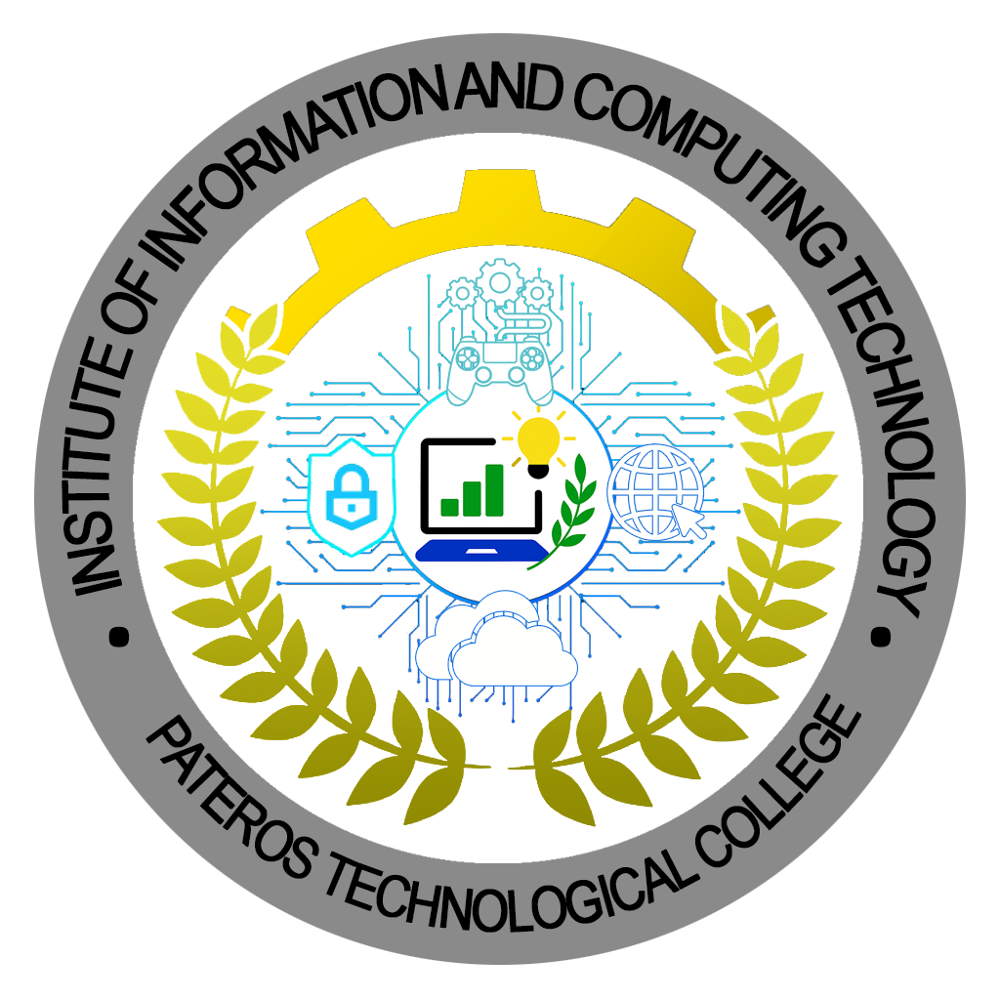

Hi there! Welcome to our Lost and Found System — your helpful tool for finding and reporting lost items within Pateros
Technological College. We understand how stressful it can be to misplace something important, so this system makes
it easier for you to report and track your belongings. Once an item is reported, the Student Council will be notified
to verify and ensure everything is handled securely. With this, you can easily stay updated and recover your lost
items faster, all within a safe and organized campus system made just for students like you.